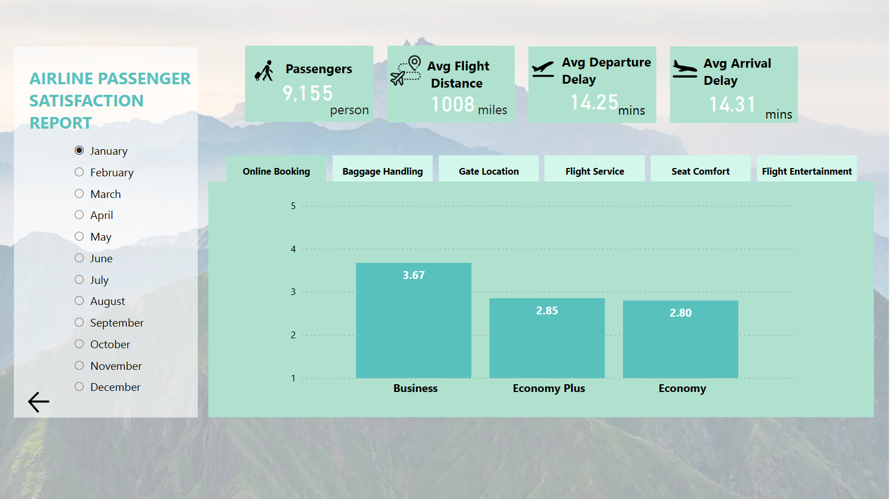
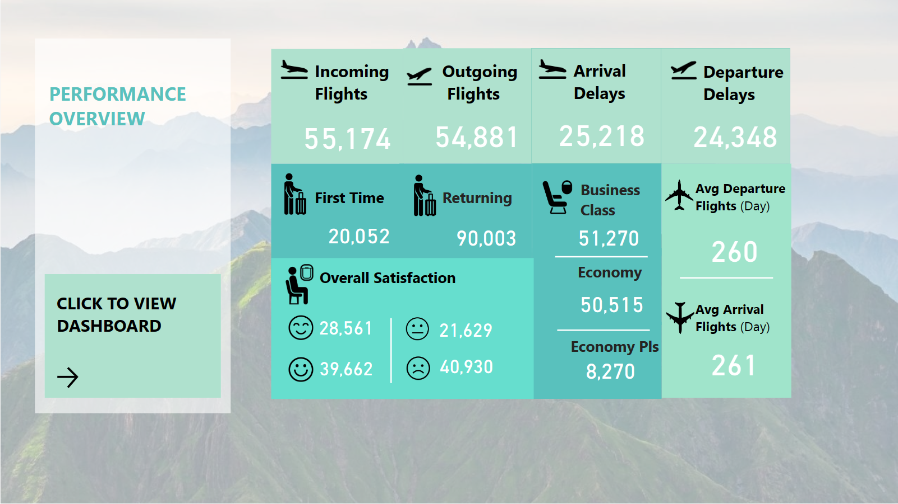

The Airline Passenger Satisfaction Report
in this project, data was collected from an Excel file that contained data on passenger satisfaction for each month and class. The data was imported into Power BI and transformed to suit the project's needs. Bar charts were created to visualize the satisfaction levels for each measure for three different classes.
The Airline Passenger Satisfaction Report by Month project involved creating a monthly report on the satisfaction levels of airline passengers across five measures: online booking, baggage handling, getting to location, flight service, seat comfort, and flight entertainment. The project also analyzed the satisfaction levels for three different classes: business class, economy class, and plus economy class.
The report highlighted that "getting to location" is the measure with the lowest satisfaction level across all classes and months, and that this area needs improvement

In addition to the satisfaction levels, I also analyzed the overall performance of the airline, including the number of incoming and outgoing flights, arrival delays, average departure flights by day, and average arrival flights by day for each of the three different classes. By taking a data-driven approach, airlines can make informed decisions to enhance their services and improve customer loyalty..
Overall, the airlines could improve their communication with passengers during delays or cancellations, or invest in better transportation options to and from airports to address the issue of low satisfaction with "getting to location".